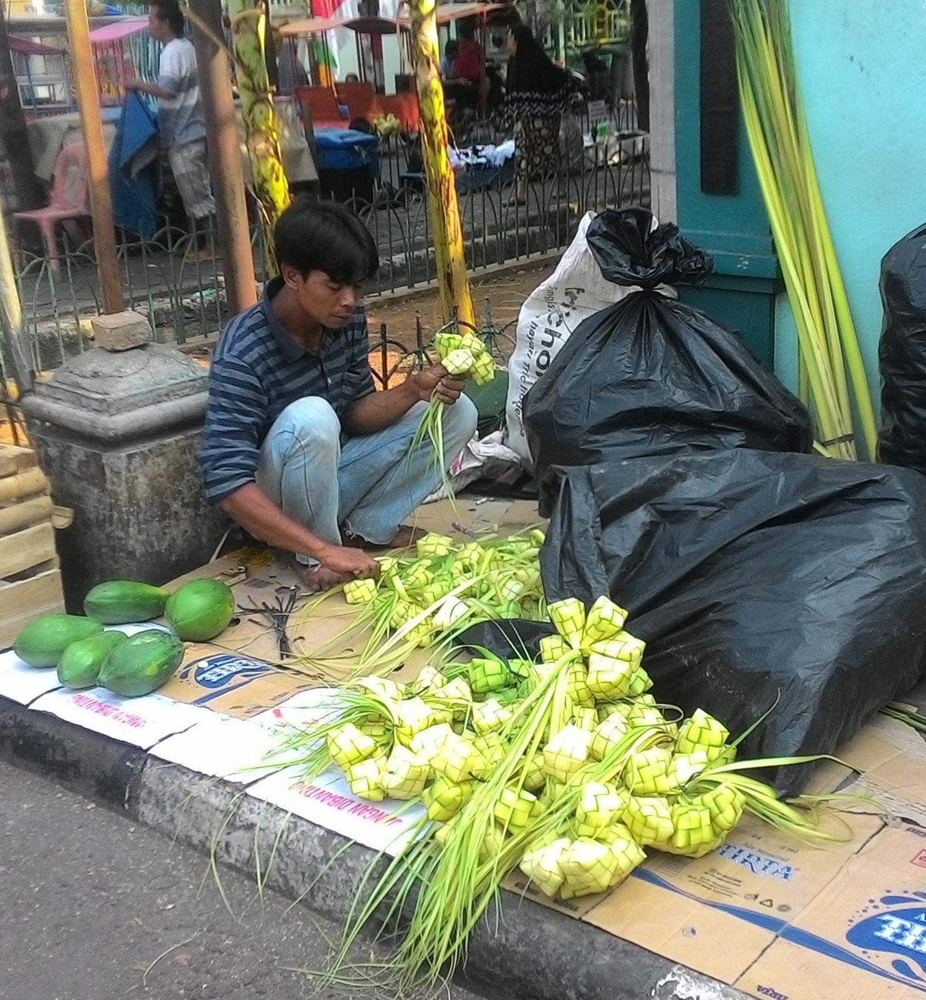

Cultural experience
Jangan Hanya Melihat. Ikut Mengalami.
Berjalan, menari, bermain, dan memasak bersama warga Maspati.

Heritage Walk
Berjalan kaki menyusuri Gang V dan VI, melewati Omah Tuo, Sekolah Ongko Loro, Rumah Raden Sumomiharjo, Losmen Asri, dan makam sesepuh kampung.
- Jelajah mandiri cukup dengan tiket masuk, gratis Heritage Keychain
- Pemandu warga yang tumbuh besar di kampung ini
- Mencicipi minuman herbal dari tanaman toga warga
Rp5.000 /orang · Everyday Ticket, Minggu–Jumat

Cultural Night
Saat gang mulai sejuk, warga menyambut tamu dengan pentas sendiri: anak-anak dan remaja memainkan musik patrol, para lansia bernyanyi dalam paduan suara, dan penari Remo membuka malam.
- Sabtu malam, pukul 19.00 WIB
- Sarung dan udeng, pakaian khas arek Surabaya, tersedia dipinjam
- Jajanan dari UMKM kampung
Rp15.000 /orang · Saturday Night Ticket, termasuk tiket masuk & keychain

Traditional Games
Maspati punya area dolanan lawas. Di sini pengunjung bisa bermain seperti generasi orang tua dulu, misalnya gobak sodor yang mengandalkan kelincahan dan kerja sama tim.
- Dipandu anak dan remaja kampung
- Cocok untuk keluarga, sekolah, dan rombongan
- Melatih kerja sama, tanpa gawai
Termasuk dalam Paket D · Maspati Cultural Gathering (traditional team building)
Tari Remo Class
Tari Remo adalah tari penyambutan khas Jawa Timur yang juga dipentaskan warga Maspati untuk menyambut tamu. Di kelas ini kamu belajar gerak dasarnya dan cerita di balik busananya.
- Durasi 90 menit, tidak perlu pengalaman menari
- Pelatih dari komunitas seni setempat
- Pentas kecil di akhir kelas
Tampil di Cultural Night setiap Sabtu pukul 19.00 WIB · Saturday Night Ticket Rp15.000
05 · Local workshops
Belajar dari dapur warga
Empat kelas singkat yang menjadi bagian dari paket wisata: pilih 2 di Royal Welcome, atau 1 di Student Explorer dan Cultural Gathering.

Workshop Coffee
Belajar menyeduh kopi di rumah 1907, sambil mendengar cerita para pejuang yang pernah singgah di sana.
- Tempat: Omah Tuo
- Durasi sekitar 60–90 menit
- Maksimal 12 peserta
Pilihan workshop di Paket A, B, dan D

Workshop Kerupuk Upil
Kerupuk ini digoreng dengan pasir panas, bukan minyak. Cobalah sendiri cara lama yang unik ini.
- Bisa dibawa pulang
- Durasi sekitar 60–90 menit
- Maksimal 12 peserta
Pilihan workshop di Paket A, B, dan D

Workshop Cincau
Tanaman cincau tumbuh di pot-pot warga. Petik daunnya, olah jadi cincau, lalu nikmati sebagai minuman segar.
- Produk unggulan RT 01
- Durasi sekitar 60–90 menit
- Maksimal 12 peserta
Pilihan workshop di Paket A, B, dan D

Workshop Ketupat
Anyam janur muda menjadi kulit ketupat. Kelihatannya rumit, tetapi tangan warga akan menuntunmu.
- Bisa dibawa pulang
- Durasi sekitar 60–90 menit
- Maksimal 12 peserta
Pilihan workshop di Paket A, B, dan D
Traditional Games dan Local Workshops dipesan sebagai bagian dari paket wisata rombongan. Rincian harga, rundown, dan fasilitas ada di halaman Tiket & Paket.
Etika berkunjung
Kamu tamu di rumah orang
- Tuntun kendaraanMotor dimatikan di mulut gang dan dituntun. Warga Maspati pun melakukannya.
- Sapa dengan “amit”Ucapkan amit atau permisi dan tersenyum saat melewati warga.
- Hormati makamBerpakaian sopan dan jaga ketenangan di pesarean. Ikuti arahan juru kunci.
- Minta izin memotretIni rumah warga. Tanyakan dulu sebelum memotret orang atau bagian dalam rumah.